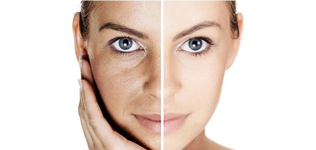

Es un concentrado de plaquetas del propio plasma del paciente. Las plaquetas poseen proteínas llamadas factores de crecimiento, las cuales tienen la capacidad de regenerar tejidos lesionados, envejecidos o poseedores de una enfermedad regenerativa. El Plasma Rico en Plaquetas regenera cartílago (Artrosis de Rodilla, Cadera, Hombros), tendones (Tendinitis de hombro, Codo, etc), piel (rejuvenecimiento facial).
Indicaciones del Plasma Rico en Plaquetas
- Artrosis de Rodilla, Cadera, Hombro.
- Tendinitis de Hombro, Codo.
- Lesiones deportivas
- Espína calcánea
- Tratamientos estéticos
- Rejuvenecimiento facial
- Arrugas faciales
- Cicatrices
- Caída del cabello
- Etc
El tratamiento con Plasma Rico en Plaquetas promueve la regeneración celular, formación de colágeno, fibras elásticas y Ácido Hialurónico
Tratamientos de:
- Cara
- Cuello
- Manos
- Cicatrices
- Estrías
- Caída del cabello
- Etc.
Efecto del PRP en la Artrosis
- Efecto protector y regenerativo del cartílago articular.
- Retrasa el deterioro del cartílago.
- Disminuye el dolor.
- Mejora la movilidad.
- Efecto sobre el Sinoviocito (célula de la sinovial) aumentando la síntesis del Ácido Hialurónico.
Aplicaciones del PRP en medicina estética
El fundamento principal de la aplicación del PRP en estética, es la estimulación por parte de los factores de crecimiento, del fibroblasto. Esta célula es la encargada de producir Ácido Hialurónico, Fibras Colágenas y Fibras Elásticas.
Estos elementos son fundamentales en la calidad de la piel que con los años su producción va disminuyendo. Es decir, el PRP enlentece el envejecimiento y rejuvenece la piel.
Como norma se recomienda al inicio tres aplicaciones, una por mes, luego otra de refuerzo a los seis u ocho meses. Esto puede ser sujeto a variaciones.
Nuestra sangre posee sustancias que son capaces de reconstruir tejidos lesionados, envejecidos o que presentan una enfermedad degenerativa. Estas sustancias se denominan Factores de Crecimiento y están presentes sobre todo en la Plaquetas sanguíneas. Estas células participan en la coagulación de la sangre, en el control de las hermorragias sanguíneas y en la reparación de los tejidos lesionados.
Si centrifugamos un poco de sangre obtendremos un concentrado de plaquetas en el plasma muy superior al encontrado en la sangre circulante (PRP). De esta manera los efectos de las plaquetas se ven potencializados.
Estos conocimientos llevaron a utilizar al principio el PRP en las intervenciones quirúrgicas con el fin de acelerar y mejorar la cicatrización de las heridas y estimular la regeneración del tejido óseo. Los odontólogos comenzaron a usar el PRP en la cirugía maxilofacial y en la implantología.
Debido al efecto estimulante de la regeneración del cartílago, algunos reumatólogos y traumatólogos utilizan el PRP en el tratamiento de la artrosis y las condropatías. En el día de hoy muchas otras especialidades médicas utilizan el PRP, como la Dermatología, Oftalmología, Neurocirugía, Deportología, Cirugía Vascular.
Obtención del PRP
De manera resumida los pasos son los siguientes:
- El paciente concurre al consultorio con un ayuno de cinco horas.
- Se extrae sangre con el sistema Vacuteiner utilizando tubos estériles con anticoagulante (Citrato de Sodio).
- Se centrifuga la sangre durante ocho minutos.
- Se obtiene un producto con tres fracciones:
- La fracción inferior corresponde a los glóbulos rojos.
- Inmediatamente por encima de esta fracción tenemos una fina capa blanca: glóbulos blancos.
- La parte superior (de color amarillo) tenemos el Plasma.
La fracción plasmática se subdivide en dos mitades:
- La mitad superior es el Plasma Pobre en Plaquetas (PPP)
- La mitad inferior es el Plasma Rico en Plaquetas (PRP)
- Se extrae esta última porción del Plasma y se la activa con Cloruro de Calcio al 10% (Cla), estando de esta manera pronto para ser utilizado.
- Inmediatamente procedemos a realizar el acto médico.
- Tiempo entre la extracción y el tratamiento: una hora aproximadamente.